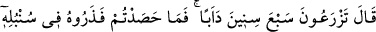
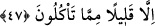

doğruyu öğrenirler.” yâni, ola ki rüyanın tam cevabıyla o adamların, yani melik ve ileri
gelenlerinin yanına dönerim de onlar senin berekâtınla bu rüyanın yorumunu öğrenirler.
47. Yûsuf dedi ki: Yedi sene âdetiniz üzere ekin ekersiniz. Sonra da
yiyeceklerinizden az bir miktar hariç, biçtiklerinizi başağında (depo edip) bırakınız.
Sanki “Peki Yûsuf rüyayı nasıl yorumladı?” diye bir soru sorulmuş ve cevap olarak
şöyle buyrulmuştur: “Yûsuf dedi ki: “Yedi sene” ziraat konusundaki “âdetiniz üzere”
sıkı bir şekilde çalışıp çabalayarak “ekin ekersiniz.”
“
” ve “
” fiilleri arasında şöyle bir fark vardır: “el-Hars”, toprağı
hazırlayarak tohumu atmak demektir. “ez-zer‘ ” ise atılan bu tohumu bakıp gözeterek
yerden bitirmek demektir. Bu sebeple bir âyette şöyle buyrulmuştur: “Şimdi bana
ektiklerinizi haber verin; onları siz mi bitiriyorsunuz, yoksa bitiren biz miyiz?” (el-
Vakıa, 56/63, 64) Görüldüğü üzere âyet ekme fiilini (el-hars) insanların yaptığını,
bitirme fiilini yapanın ise onlar olmadığını ifade ediyor. Bu bakımdan “ez-zer‘ ” daha
geneldir. Çünkü bu fiil hem tohum atmak mânâsına hem de Allah’ın bu tohumu bitirmesi
mânâsına gelmektedir. Nitekim el-Kamus’ta böyle geçmektedir.
Yûsuf (a.s.) bu sözüyle onlara, yedi sene gâyet verimli bir şekilde ekip biçmeye
devam edeceklerini ifade etmiş oluyor. Çünkü rüyadaki yedi semiz ineğin doğru
karşılığı ve te’vili ancak böyle bir bollukla gerçekleşecektir. Yûsuf (a.s.) ayrıca
kendileri açısından faydalı olacak bu işi çok yapmaları gerektiğini göstermek üzere
şöyle diyor:
“Sonra da” bu yıllarda da “yiyeceklerinizden az bir miktar hariç,” ihtiyaç
duyduğunuz kadarını alırsınız ve ihtiyaç duyduğunuz vakitte tüketirsiniz. Bu sözüyle,
onlara az yemelerini ve ekinlerin tohumluk olarak ayırdıkları kısmında değil, sadece
yemek için ayırdıkları kısımda kesintiye gitmelerini salık veriyor. Çünkü tohumlukta
kesinti yapmamaları gerektiği ‘yedi sene ekersiniz.’ ifadesinden anlaşılıyor.
“Biçtiklerinizi” o başaklardan her ne biçerseniz “başağında” depo edip “bırakınız.”
Yani Mısır havâlisindeki çiftçilerin yaptığı gibi haşarâtın ekini yememesi için
başaklarından çıkarmayıp üstünde bırakınız.
Bunu, muhtemelen rüyadaki yedi taze başaktan yola çıkarak söyledi. Mısırlılar böyle
bir şeye alışık olmadıkları içindir ki bunu emretti. Ekip biçme alışkanlıkları ise zaten
var olduğundan dolayı ekip biçmeyi vukua gelmesi kesin bir şey olarak gördüğü için
emretmedi. Bu yedi sene ekip biçmeyi, mezkûr rüyadaki yedi semiz ineğin karşılığı
olarak görüp rüyayı bu şekilde yorumladı.
Onlara bu şekilde davranmalarını tavsiye ettikten sonra bu tavsiyenin hikmetinin ne